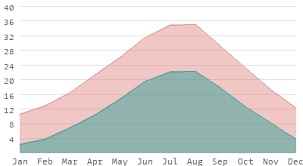
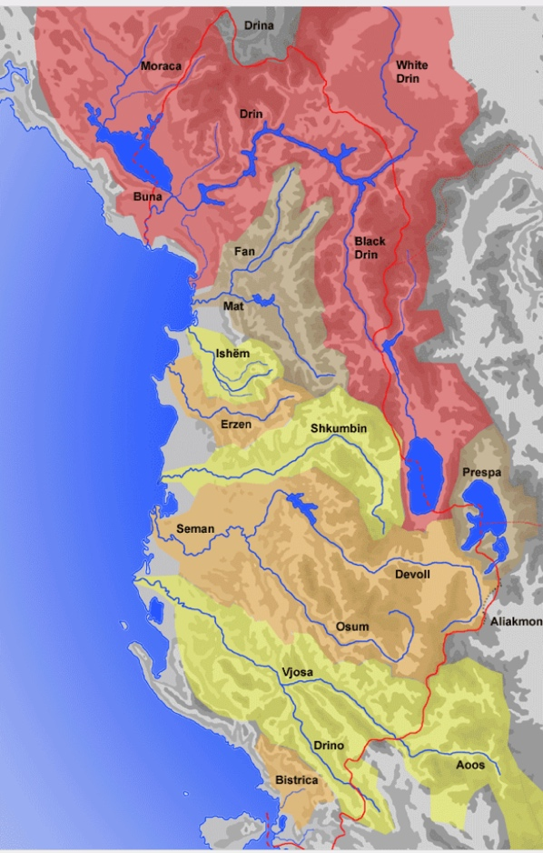

Ne rrethin e Shkodres perfshihen rreth 13 maja ne Alpe, te cilat kane lartesi mbi 2000m, si pshm.: Jezerca (2694m), Papluka, Mali i Vilës, Radohima (2570m), Mali i Shënikut (2550m), Biga e Gimajve (mbi 2200m) etj. Por ne Shkoder gjenden dhe male te tjera me te ulta si: Taraboshi (595m), Shita e Hajmelit e deri te kodrat e Bushatit, të Bërdicës, të Kodhelit, të Kakarriqit, të Rrencit e të Tepes.
N'dër zonat më të bukura në rrethin e Shkodrës është ajo e Dukagjinit, e përpër nga Shala, Shoshi, Pulti dhe Kiri. Shala është e përbërë nga dy lugina të vogla; lugina e Kopreut që përbët nga fshatrat Abat, Breg-Lumi, Gimaj, Nënmavriq, Nicaj-Shalë, Vuksanaj, etj, si dhe lugina e mrekullueshme e Thethit. Në vijëmësin e tyre janë edhe lugina e Përroit të Thatë.
Shkodra ka gjithashtu dhe një florë dhe faunë shumë interesante. Ka rreth 1900 lloje bimësh dhe 3500-4000 specie shtazore. Ky qytet është ndër të rrallët që natyra i ka falur fushat pjellore, lumenjtë plot ujë, liqenin e mrekullueshëm e kodrat e gjelbëruara.
- Selma Burrja
Shtrirja në mes të një relievi fushor, kodrinor, paramalor dhe malor, afërsia me Detin Adriatik dhe liqenin e Shkodrës kanë përcaktuar edhe klimën e saj, një klimë mesdhetare me dimër të butë e të lagësht dhe verë të nxehtë e të thatë. Temperaturat nuk janë kurrë tepër të larta për shkak të pozicionit të zonës në lartësi. Temperaturat mesatare në vit variojnë nga 11,8 °C deri ne 14,0 °C. Temperatura në Janar nga 0,9 °C deri në 6 °C. Në dimër fryn era e murrlanit (erë lokale), e ftohtë, e fortë dhe e thatë, ndërsa në fund të vjeshtës fryn era e shirokut, që shoqërohet me reshje dhe fryrjen e lumenjve. Sasia e reshjeve në këtë qytet është e madhe. Mesatarisht aty bien 2500 mm shi në vit, pra një nga zonat më të lagështa të Shqipërisë. Muaji me i ftohtë i vitit është muaji janar, ndërsa muaji me i nxehte i vitit është muaji korrik. Reshjet e dëborës bien rrallë, ndërsa ngricat shënohen zakonisht ne fundin e vitit.
- Liza Gjeka


Qyteti i Shkodres eshte nje nga qytetet me te vjetra te vendit. Hidrografia e ketij qyteti eshte e pasur.duke perfshire disa lumenj dhe liqene. Lumi i Kirit eshte lumi kryesor qe kalon neper qytet dhe eshte nje nga lumet me te medhenj te Shqiperise. Ai rrjedh nga Malet e Zhnjes{Dukagjin} dhe kalon neper qytet, duke u bashkuar me lumin Bune ne jug te tij. Lumi i Kirit furnizon qytetin me uje te pijshem dhe eshte nje burim i rendesishem i energjise hidroelektrike. Ne afersi te qytetit ndodhet edhe Liqeni i Shkodres, i cili eshte liqeni me i madh ne Gadishullin Ballkanik dhe i dyti me i madh ne Mesdhe. Ai ndodhet ne kufirin mes Shqiperise dhe Malit te Zi dhe eshte nje atraksion turistik i rendesishem per zonen. Ne pergjithesi, hidrografia e Shkodres eshte e pasur dhe e rendesishme per zhvillimin e qytetit dhe rajonit perreth. Drini formohet afer qytetit te Kukesit me bashkimin e dy degeve kryesore te tij: Drinit te Bardhe qe buron afer Pejes dhe Drinit te Zi qe buron ne Struge nga pjesa veriore e Liqenit te Ohrit. Deget kryesore te Drinit jane Lumi i Shales, Lumi Valbona nga Alpet Shqiptare, Drini i Bardhe ne Kosove dhe Drini i Zi ne Maqedonine e Veriut. Ne pjesen fundore Drinit i bashkohet edhe lumi i Kirit qe buron nga Dukagjini, e pastaj bashke derdhen ne Bune. Pervec lumenjeve dhe liqenit Shkodra ka edhe ujvara si ajo e Valbones dhe e Thethit ose burime si syri I kalter she syri I sheganit.
- Roi Bushaj